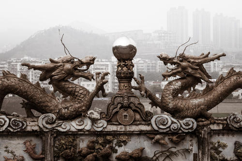
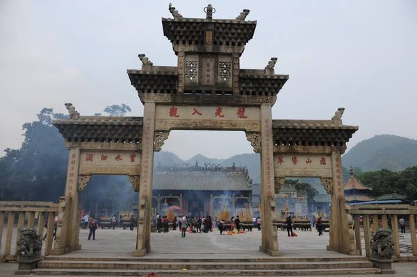
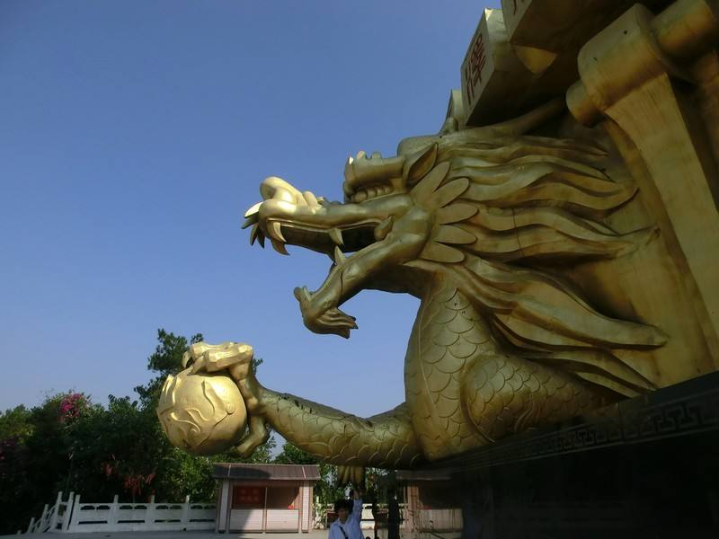
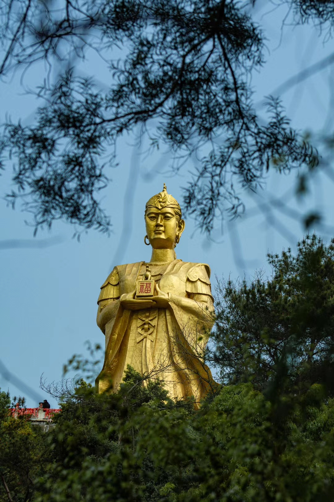

梧州龙母庙，历史感厚重的文物古迹

北宋初期
建设时间

北宋初期
千年古建筑

百越女首领
为之建设

龙母圣像
中国第一龙母像
畅简介
广西省梧州市龙母庙位于河东老城区西北的桂江之滨，枕山面水，与地通灵，始建于北宋初年，是一座为纪念西江河神龙母而兴建的十年神庙，历代经多次修缮和扩建，现占地面积十万平方米。
主体建筑包括牌坊，正殿，前殿，龙母宝殿，寝宫，钟鼓楼，东西塔楼，厢房连廊等，庙内拥有中国最高最大的38米龙母圣像，明代出土石龟和明代状元伦文叙题写的石龟碑刻，总府提名记，龙母庙集龙母崇拜，
以及道教与佛教和谐共融兼容并蓄的建筑奇观，是兴众祈福，敬拜龙母和了解古代民族文化的圣殿。
百姓尊奉龙母为河神，并以梧州为中心，在西江沿岸以及全国各地兴建了三百多座龙母庙，龙母文化流传之广，
影响之大可见一斑，梧州因而享有龙母故乡的美誉，一直以来民间各种拜祭龙母的活动一直延绵不断，最为隆重的有四大活动，春天的龙母开金库，夏天的龙母诞，秋天的龙母得道诞，冬天的朝母节。
畅问答

畅古今
它始建于北宋初年，距今也是有上千年的历史了。它有着浓浓的宋代建筑风格，如果从历史古迹上来说的话，这已经是广西少有的宋代风格建筑了。
即使从历史的角度上来说的话，这也是极具有研究价值的。而且这座龙母庙也是经历了很多朝代，在明朝、清朝的时候也都被重修过。但是从大体上来看，
它还是保留着很浓厚的宋代建筑风格。可以这么说吧，这座龙母庙见证着当地的历史变迁，而它也好像是守护着一方子民一样。
如今这里的香火也是十分旺盛的，毕竟当地人也都信仰着它，所以说这里的香火一直也是比较鼎盛的。很多游客，也都是会慕名前来的。在景区内，有着形形色色很多的建筑物，比如说人们来到这里都会来参观的龙母宝殿，
还有龙母寝宫等等，这些都是具有很强的观赏价值的。当然了，来到这里的人们基本上也都会去朝拜的，即使是很多外来的游客，在这样神圣的地方，也会不由自主的去朝拜。
畅心中

在很多人的心目当中，这座龙母庙那就是心中的神圣之地。当然了，作为游客的话，更多的也是来这里感受一下龙母庙的神圣气息。来到这里去求个平平安安，求个心安理得嘛。从旅游的角度出发的话，
到广西除了去看那些美丽迷人的风景，来这样的地方参观参观也是十分不错的。相信当你到了这里之后，也同样会被这里的浓厚气息所感染到的。
龙母庙是珠江流域人民为纪念战国时期南方百越民族女首领“龙母”而兴建的庙宇，珠江流域沿江各地均建有龙母庙，尤以广西梧州龙母庙和广东德庆龙母庙为祖庭，
享誉海内外。梧州龙母庙，始建于北宋初年，位于梧州桂林路，依珠投岭西麓、
面临桂江，该庙于上世纪80年代中期进行了维修复原，此后逐步进行扩建，占地面积11万平方米，建有牌坊、五龙喷水壁、前殿、龙母宝殿、龙母寝宫、钟楼、鼓楼、塔楼和中国最高的38米龙母圣像